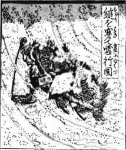
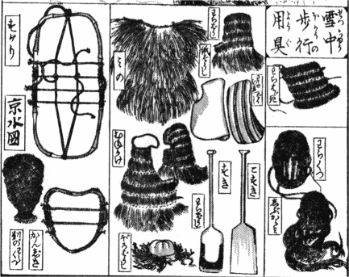

世之農商而嗜
ム二文雅
ヲ一者、或不
レ知所
三以
ヲ文雅
ノ為
ル二文雅
一、徒
ラニ企
二羨
シ韻士墨客之風標
ヲ一、沈
二酣
シ文酒
ニ一、流
二連
シ花月
ニ一、而置
テ二生計於不問
ニ一、以傾
ル二産業
ヲ一者、
間亦有
レ之、是豈嗜
ムノ二文雅
ヲ一罪
ラン哉、其人特自
ラ取
ルレ之
ヲ耳
ノミ矣、鈴木牧之翁者北越塩沢之老農也、性嗜
ミ二文雅
ヲ一、而能尚
ヒ二節倹
ヲ一抑
エ二驕惰
ヲ一、不
レ絶
二誦読
ヲ於経営之中
ニ一、而務
ム二鉛槧
ヲ於会計之余
ニ一、以交
ル二遠近之墨客
ニ一、嘗
テ以
二堪忍之二字
ヲ一銘
シテ自
ラ守
ル、以
レ故
ヲ其名久
布二遠邑
ニ一、而生業
モ亦因
テ以
テ致
ス二豊饒
ヲ一矣、嗚呼若
レ翁者不
シテレ徇
カハ二文雅之名
ニ一而能務
ムル二其実
ヲ一者、非
ラズ耶、余於
レ翁
ヲ得
タリ二一面識
ヲ於江戸
ニ一、而後特以
レ書訂
スルレ交
ヲ者有
リレ年
レ于
此、今茲乙未、遠
ク寄
二示
シテ其所
ノレ著北越雪譜
ナル者六巻
ヲ一、併
テ嘱
スルニ以
スレ校訂
ヲ、時方
ニ盛夏炎威如
レ燬、乃
チ就
テ二北※
［＃「窗−穴かんむり」、U+56F1、11-8］下
ニ一試
ニ繙而閲
レバレ之、則越雪恍
トシテ如
シ下耳
ニ聞
二騒屑之声
ヲ一、目
ニ見
ルガ上二紛霏之影
ヲ一、使
メ三レ人頓
ニ忘
レ二甑中之苦
ヲ一、読
テ到
レバ二積畳埋
レ屋行旅不
レ通人以窮乏柴米或不
ルニ一レ給
セ、則※
［＃「冫＋亶」、U+20610、11-9］然寒顫
シ肌膚為
レ之粟生
セリ矣、余因
テ以謂、

袴軽薄子弟、当
テ二微雪俄
ニ下
リ紛々舞
レ空之際
ニ一、彫鞍宝勒飛
シ二玉塵
ヲ於郊
 ニ一
ニ一或
ハ氈帽棕鞋蹈
ミ二瓊瑤
ヲ於街衢
ニ一或画舸載
セレ妓
ヲ或高楼呼
ビレ酒
ヲ直
ニ以為
シ二勝遊楽事
ト一、曾不
レ知
三飢寒為
ルヲ二何物
一、若
シ令
バ三レ其人
ヲ読
マ二此書
ヲ一、依
テ以想
ン二其種々凍餒之苦状
ヲ一乎、然則安
ンカ知
ンレ不
ルコトレ有
下能省
三悟
シテ非
ルコトヲ二宴安之公共
ニ一、而戚々焉生
ズル上二戒懼之心
ヲ一者哉、寧梓而行
ハレ之其有
ン三裨
二益世教
ニ一盖非
二鮮小
ニ一也、
間者稍得
テ二秋涼
ヲ一、聊削
リ二其駁雑
ヲ一、校訂方
ニ畢
ル者
ノ三巻、書賈文渓堂見而喜
レ之謀
ル二梓行
セント之
ヲ一、余寄
テレ簡
ヲ以告
レ翁、々曰※
［＃「雨かんむり／彗」、U+4A2E、12-1］中閉戸
ノ漫筆、豈敢
テ欲
ンレ梓
耶、於
レ是乎、不
二復俟
一レ請
二之
ヲ於翁
ニ一挙
テ以付
スレ之、翁之嗜
テ二文雅
ヲ一而能務
ル二其実
一、此必笑
テ頷
ンレ之而已、翁之稿本国字之間漢字者、嘗不
レ添
へ二音訓之
仮名ヲ一、余今尽
ク添
テレ之以
テ便
スト二童蒙
ニ一、云
フハレ爾
カ天保六年乙未秋園菊開日
江戸
京山人百樹并
書 
此書の稿本図は別冊とし、或は其説に大図を描して添たるもあり、皆牧之翁が自筆の草画也。此挙梓行の為にせざれば図に洪繊重復あり、今梓に臨て其図の過半を省き、目を新にするものを存して巻中に夾刺するは単冊に尽し難を以て也。※
［＃「其＋りっとう」、U+5258、13-3］は是刪定の意に係る所也。余嘗て原図を閲するに、雪中の諸状混錯を走墨に失して通暁し難きもの靴中の瘡痒これを何如せん、唯翁が草図に傚ひて真に描せる而已。或原図の梓に入るものは則これを加ふ、或は説有て図無きもの其説に拠て其図を作りしもあり。盖余未だ越地を踏ず、越雪の真景に於て茫然たり、故に雪図に於て違漏あるも知るべからず、其誤を編者に駆ること勿れ。
京山男少年
乙未秋
京水百鶴 



